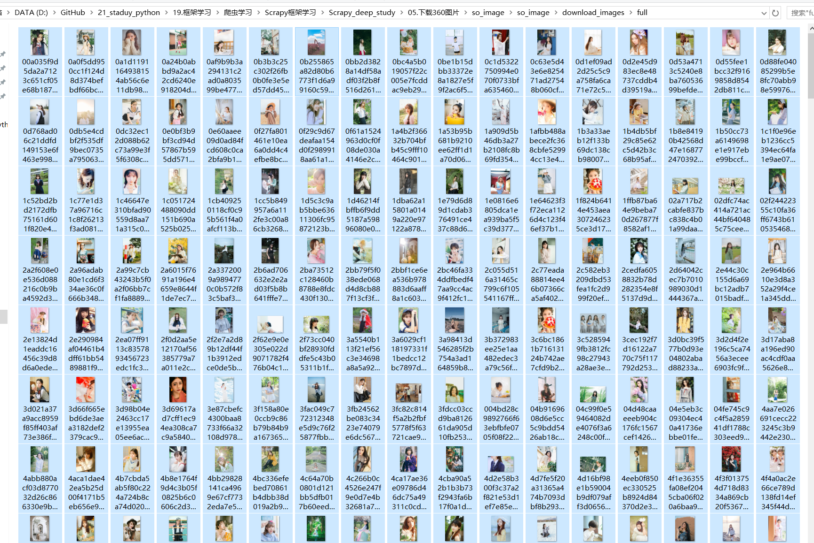

Contents
22.3.6. 项目实战:下载360图片¶
爬取网址：http://image.so.com/
爬取信息：爬取图片
爬取方式：scrapy框架
存储方式：ImagesPipeline
1.图片加载规律：
http://image.so.com/zj?ch=go&t1=402&sn=0&listtype=new&temp=1
http://image.so.com/zj?ch=go&t1=402&sn=30&listtype=new&temp=1
http://image.so.com/zj?ch=go&t1=402&sn=60&listtype=new&temp=1
http://image.so.com/zj?ch=go&t1=402&sn=90&listtype=new&temp=1
其中，ch为分类，sn为页数，图片加载采用JavaScript脚本完成，通过XHR项可以简单获取， 另外网站使用jQuery发送请求，响应结果为json数据，下面使用json库可以解析结果。
调用
scrapy shell http://image.so.com/zjl?ch=beauty&sn=30&listtype=new&temp=1
In [1]: import json
In [2]: r = json.loads(response.body.decode("utf-8"))
In [3]: r
Out[3]:
{'count': 30,
'end': False,
'lastid': 30,
'list': [{'dsptime': '',
'fnum': '0',
'grpcnt': '11',
'grpmd5': 'a7d130bf86f7fc9af250c9dec1c4db0e',
'grpseq': '1',
'height': '617',
'id': '258b6bdf9d062d0b787a8dece24ee31b',
'imgkey': 't01545c010da98e5b
...........省略

编码实现
(1）创建Scrapy项目，并使用scrapy genspider命令创建Spider。
（2）在配置文件中启用ImagesPipeline，并指定图片下载目录。
（3）实现ImagesSpider。
01 首先创建Scrapy项目，取名为so_image，再使用scrapy genspider命令创建Spider。
$ scrapy startproject so_image
$ cd so_image
$ scrapy genspider images image.so.com
02 settings.py中启用ImagesPipeline
# Obey robots.txt rules
ROBOTSTXT_OBEY = False
ITEM_PIPELINES = {
'scrapy.pipelines.images.ImagesPipeline': 1,
}
IMAGES_STORE = 'download_images'
03.image.py中实现爬虫主程序
# -*- coding: utf-8 -*-
import scrapy
from scrapy import Request
import json
class ImagesSpider(scrapy.Spider):
name = 'images'
# allowed_domains = ['image.so.com'] ###必须注释掉，否则只能下载第一页图片
urls = 'http://image.so.com/zjl?ch=beauty&sn={}&listtype=new&temp=1'
start_urls = [urls.format(0)]
image_index = 0
MAX_DOWNLOAD_NUM = 1000
def parse(self, response):
r = json.loads(response.body.decode("utf-8"))
infos = r['list']
yield {'image_urls': [info['qhimg_url'] for info in infos]} # 给image_urls传递链接列表
self.image_index += r['count']
# 如count字段大于0，并且下载数量不足MAX_DOWNLOAD_NUM的图片信息
if r['count'] > 0 and self.image_index < self.MAX_DOWNLOAD_NUM:
yield Request(self.urls.format(self.image_index)) # callback默认传递给parse(self,response)。
图片很快就能下载好。如下： 